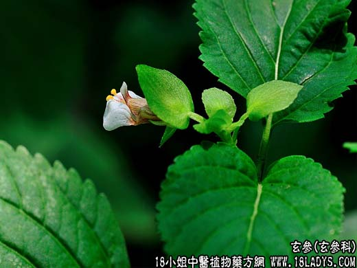

【中药概述】
玄参为玄参科草本植物玄参的根。苦、甘，咸、寒。归肺、胃、肾经。
1．凉血滋阴：用于温热病入营分，阴伤、烦热口渴，夜寐不安，或温病热毒发斑等，有凉血解毒之效，如（清营汤、化斑汤）、（<温病条辨>增液汤）。
2．解毒软坚：用于咽喉肿痛，属于外感者，可与牛蒡子，薄荷等配伍；属虚火上炎者，可与生地黄，麦门冬等配伍；瘰疬、痰核等，常配牡蛎，浙贝母等。如（消瘰丸）、（<外科正宗>玄参
解毒汤）。
【药效鉴别】
元参不但能滋阴降火，而且有凉血解毒的作用。玄参以祛邪为主。
【药理作用】
有降血压、降血糖、中枢抑制、解热等作用；还具有抗病原微生物及其毒素、利胆和降低毛细血管通透性等作用。
【化学成分】
含玄参素、植物甾醇、生物碱、脂肪酸，微量挥发油及维生素A类物质。
【用量用法】
10——15g，水煎服。或入丸散剂。
【使用注意】
脾胃虚寒腹胀便溏者忌。本品反藜芦（诸参辛芍叛藜芦）。